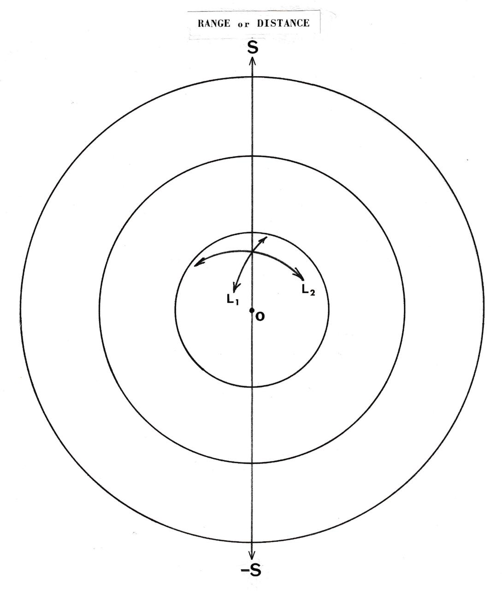
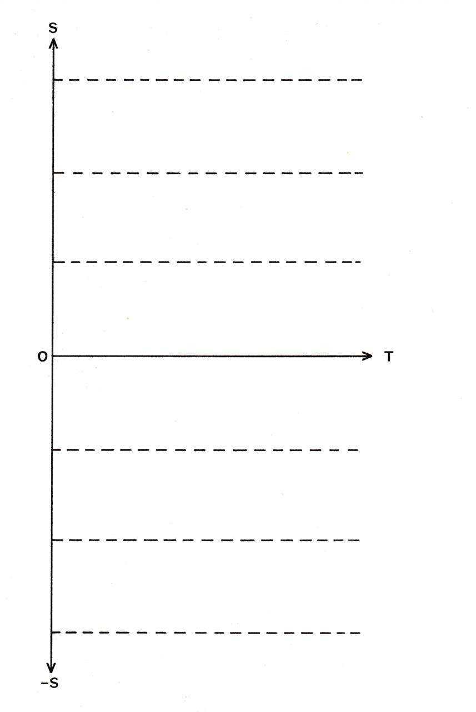
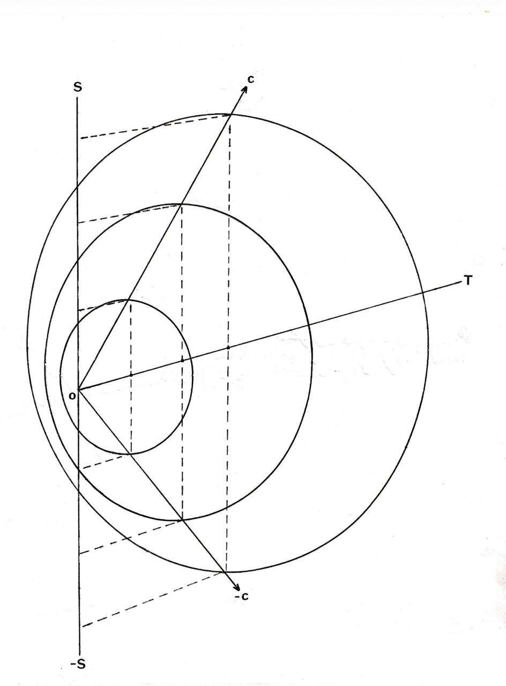
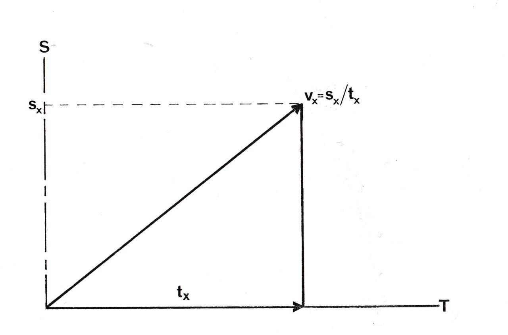
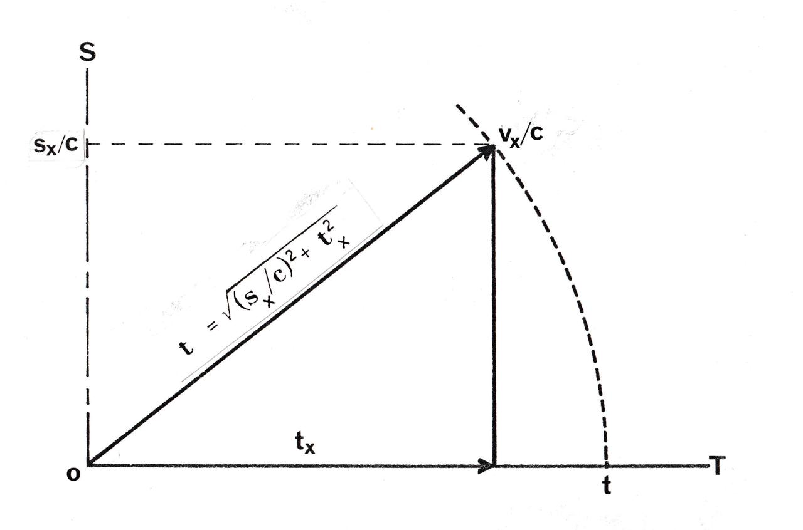
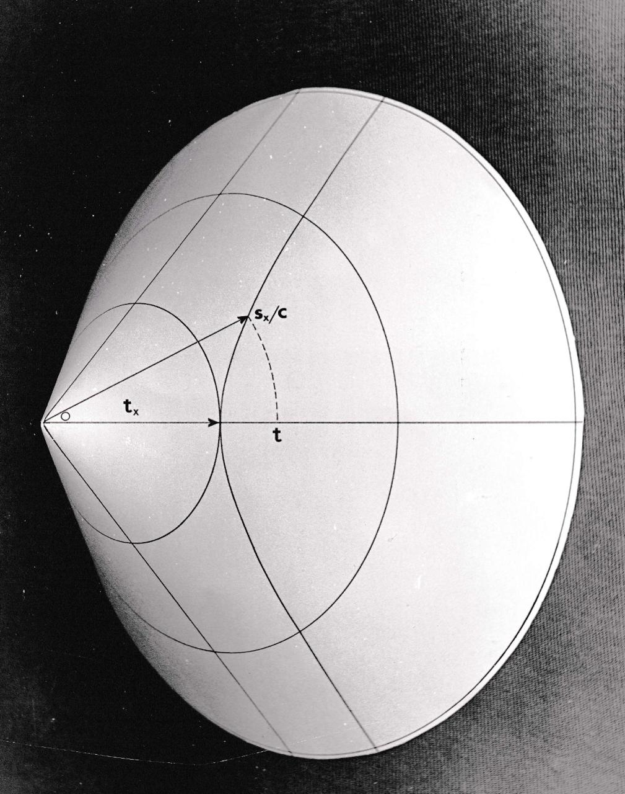
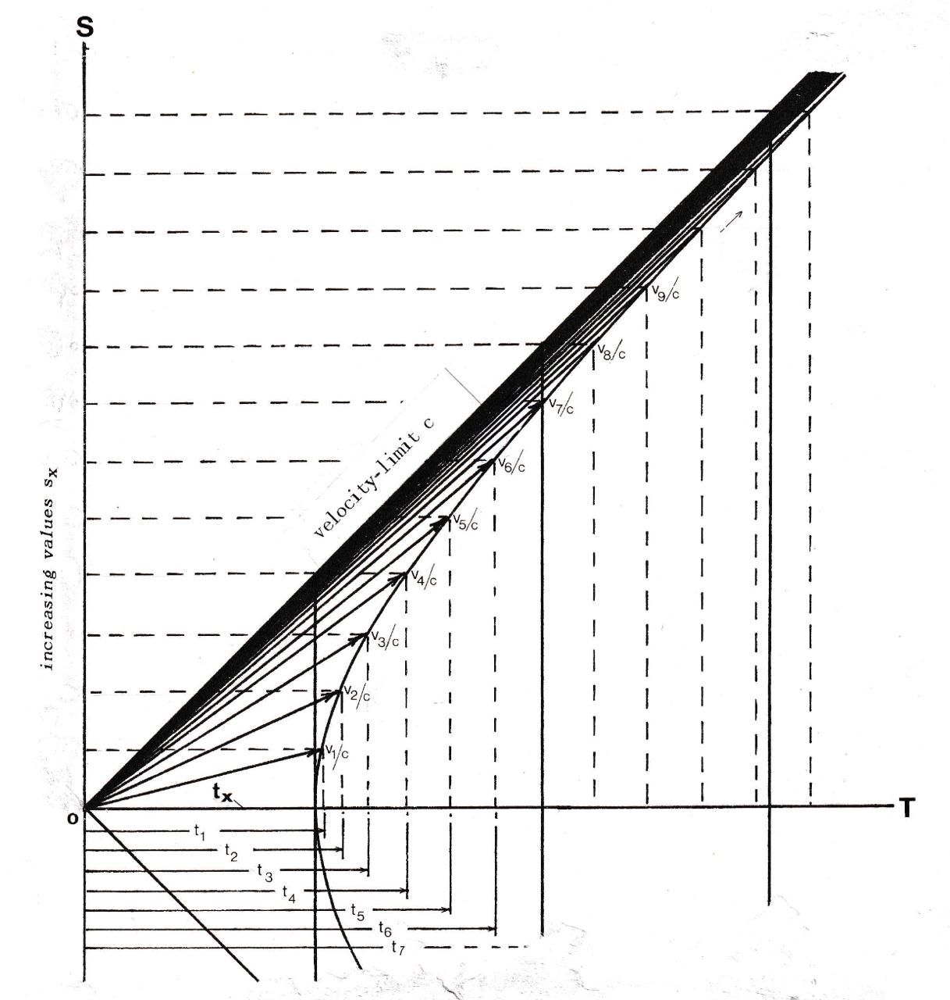
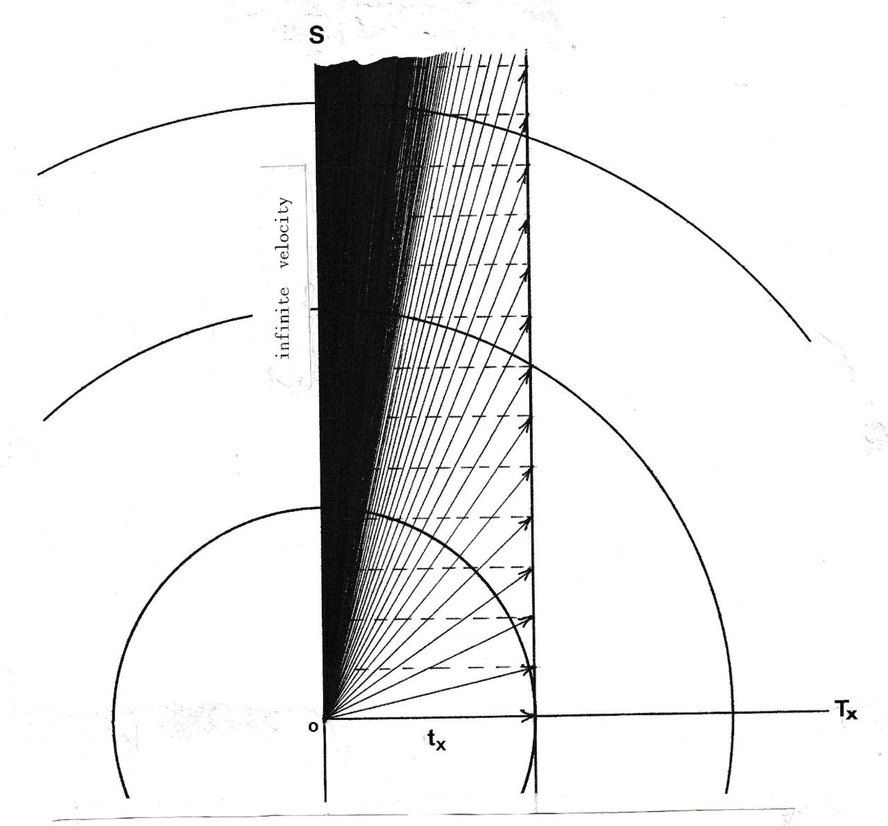

It is commonly believed that relativity theory is difficult to understand. I want to demonstrate that on the contrary, relativity is very easy to understand -- as soon as we drop two strangely persistent assumptions. One of these is that in order to understand relativity we have to understand Einstein, and the other is that for the same purpose we have to know all the technical details about how light travels in space. Perhaps I can show you that neither of these assumptions is necessary. All we need to know is the elementary Theorem of Pythagoras, because relativity, as I shall demonstrate, is nothing more than Pythagoras' Theorem applied to observational dimensions of distance and time.
Our scientific knowledge of the world at large is based on optical information. Let us look at the way that visual information is structured. There is a point -- call it O -- which we identify as ourselves and from which the distances of objects are radially projected. The projection is made from information such as the comparative sizes of images, their relative brightness and angular diminution (parallax, focus, etc.). In Figure 1 we see the radial or polar character of these projected dimensions.

Altogether there are three of these dimensions relative to O. They are:
- range, or distance (S);
- elevation, or the up and down angle of the range dimension (L₁);
- azimuth, or range-angle side-to-side (L₂).
The concentric spheres in the figure represent units of distance projected in this way, that is, in metres, miles, light-years or whatever.

In Figure 2, Figure 1 is shown projected in time. For this we have to suppress one of the angular dimensions, which makes the sphere in Figure 1 now appear as a disc seen edge-on. This forms the vertical axis S of a four-dimensional system, the horizontal axis of which (T) represents time, or the enduring aspect of the observer-projected spheres in Figure 1.
Now it is common knowledge that the distances of astronomical bodies are also times. For instance, the distances of the stars are more conveniently given in years than in kilometres. On the same scale, the sun is eight minutes away and a metre is equivalent to 3.3 nanoseconds. This means that what we are accustomed to think of as 'distance' is, in fact, distance-time in which the ratio of conventional distance-units to time-units is a constant c, where c is 300,000,000 metres to the second. When Figure 2 is redrawn to this scale of units it appears as in Figure 3, below.
In Figure 3, observer-space-time is shown projected at forty-five degrees to the axes S and T. In the next diagram, Figure 4, Figure 3 has been turned a little to one side, showing that our relative (i.e., observer-projected) four-dimensional space-time has the geometrical character of a cone, with its apex or origin at point O.

Leaving all this aside for the moment, let us now look at the way motion is represented in classical mechanics. Figure 5 is the traditional way of representing a uniform velocity vx of a body X as the distance sx travelled by X in a time tx. In classical mechanics it was not considered necessary to specify the clock by which that time was measured. This was because time was thought to be universal, that it was the same regardless of whether it was measured by O's clock or X's clock, or by anyone else's clock, so long as all these clocks were all properly synchronised. Consequently, only two measures are represented in this classical motion-graph: the distance travelled and the time taken -- as measured, it was assumed, by a kind of universal standard, or cosmical 'Greenwich mean time'.

This classical idea of a 'universal time-standard', however, was unrealistic. If space is time then a body which travels in space travels in time. Figure 5 is therefore not simply a graph, as classically assumed. It is a geometrical time-triangle. The geometrical consequence of the motion vx of X in Figure 5 is therefore to stretch, or dilate, the duration of X relative to O, from tx to t in the manner shown in Figure 6. The duration of X relative to O is thus the hypotenuse, t, of a two-dimensional triangle with sides (time-components) s/c and tx. The length of this hypotenuse is given, as with any normal right-triangle, by Pythagoras' Theorem, which in this case is:

This geometrical consequence of motion is, in effect, relativistic time-dilation. Experimental evidence that such an effect occurs is now commonplace in modern physics.
Now in formula (1) there are three variables, whereas in classical motion-graphs there are only two. Formula (1) tells us, then, that the true depiction of motion is not that of the flat graph, as in Figure 5, nor a two-dimensional triangle as in Figure 6, but a geometrical time-model in three time-dimensions. One of these dimensions is the range-axis S, along which distances s/c are plotted; another is T, or the duration as measured by clock O, and the third is Tx, or the duration as measured by clock X.
The true shape of the motion-graph is therefore a triangle drawn, not on a flat surface, as in classical representations of motion, but on the surface of our projected three-dimensional time-cone.(*) I say three-dimensional, but in fact, since each circular cross-section of this cone represents a three-dimensional sphere (see Figure 1) the total number of dimensions is five. This is illustrated in Figure 7.

We arrive, then, at a natural commonsense model for understanding relativistic time-dilation. It is simply Pythagoras' theorem, whose standard geometrical projection is the cone shown in Figure 7. This illustrates very clearly the inadequacy of the traditional 'flat-graph' concept of motion, the persistence of which makes relativity all but completely incomprehensible. It shows that motion involves not just the two measures, distance and time, as in the classical way of thinking, but at least three measures: one, the distance (distance-time) travelled by the moving body X, relative to O; two, the time taken according to clock O; and three, the time taken according to clock X.
The fact that these two times are different can be seen from their conic projection. For instance, from the end-view of the cone, shown in Figure 8a, we see how motions are depicted in the plane of the dimensions S and Tx. This resembles the classical 'flat' graph of motion in which the natural limit of all motion is infinity. The side-view of the cone, Figure 8b, shows these same motions in the dimensions S and T of the observer O, in which they tend towards the finite upper limit set by the slope of the cone (which is c).


Figure 8b also shows the dilations in the time of X relative to O as the velocities v = s/t approach the limit (asymptote) c. The conventional way of expressing these time-dilations is by the Lorentz-Einstein equation:
for which there is no simple traditional depiction. That mysterious formula, however, can now be depicted. Its natural depiction is simply the sideways view of the cone-model, shown in Figure 8b.
The Lorentz-Einstein formula, however, like its graphical depiction in Figure 8b, is incomprehensible when presented on its own, without the knowledge that what it expresses is the geometry of conic surfaces and sections. It is the misfortune of historical relativity that the formula was discovered in this dissociated, mechanistic, way -- which is doubtless why Relativity has always been so notoriously difficult to understand.
That this 'incomprehensible' formula is nothing more, as I have said, than our old Pythagoras' theorem in disguise is easily demonstrated. All we have to do, since v in (2) is s/t, is to substitute accordingly for v in the formula, and simplify. This produces, straightaway, the Pythagorean relation expressed in (1).
We may conclude, then, that the most natural, most simple and economical way of understanding relativistic time-dilation is geometrically, by way of Pythagoras' theorem applied directly to relative distance-time dimensions in the way we have described.
This, of course, was not the way relativity was discovered. Due to a peculiar quirk of history, the discovery of c was interpreted not as a constant for converting metres into seconds but as 'the speed of light in space'. It was in experiments conceived in terms of this mechanistic conception, therefore, that Formula 2 emerged. The connection between this formula and Pythagoras' theorem was then made indirectly, added as a kind of 'esoteric afterthought' by the mathematical geniuses, Einstein and Minkowski.
By readjusting this historical process, however, and putting Pythagoras first we may doff our caps to genius and begin to see relativity in a more normal commonsense-philosophical perspective.